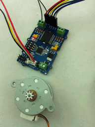

The Grove I2C motor driver is a new addition to the Grove series with the same easy-to-use interface. Its heart is a dual channel H-bridge driver chip（L298N）that can handle current up to 2A per channel, controlled by an Atmel ATmega8L which handles the I2C communication with for example an Arduino. Both motors can be driven simultaneously while set to a different speed and direction. It can power two brushed DC motors or one 4-wire two-phase stepper motor. It requires a 6V to 15V power supply to power the motor and has an onboard 5V voltage regulator which can power the I2C bus and the Arduino(selectable by jumper). All driver lines are diode protected from back EMF.
The easy software interface is not the only easy-to-use feature because the Grove I2C motor driver is designed to get you up and running in no time. It features a LED for power and four LED's to indicate if and to which direction each motor is running. Screw terminals facilitate motor and power connections, and the Grove system plug and I2C interface enables you to daisy-chain the driver with many other devices.
Model: ROB72212P
| Item | Min | Typical | Max | Unit |
|---|---|---|---|---|
| Working Voltage | 6 | - | 15 | VDC |
| Max Output Current per channel | 0.5 | A | ||
| Maximum Total current | 1.0 | A | ||
| Input/output voltage on I2C bus | 5 | V | ||
| Communication protocol | I2C | / | ||

78M05 IC: 5v voltage regulator
L298 IC: dual full bridge driver
Atmega8 IC: Control Motor Rotate.
NOTE: Input voltage on screw terminals is regulated to 5v and connected to I2C +5v via a jumper (J4). Remove jumper if both external power via the screw terminals and power via the I2C header is used. Use jumper if 5v should be supplied to the I2C bus.
This motor driver can be used to drive any brushed electronic motor as long as it doesn't consume more than 2A at 5v. Two motors can be driven simultaneously while set to a different speed and direction. The speed can be set fully proportional and is controlled by the ATmega8 on the board using PWM. It is set by I2C commands sent from Arduino or Seeeduino. It is perfect for applications like robots, homebuilt RC cars, case fans, high power LED illumination or any other project that involves proportional load control.
The I2C Motor Driver can control motor which is based on the chip L298, The L298 isn’t just a dual motor driver, it is a dual H-bridge. An h-bridge is basically a specific setup of transistors that allow you to switch direction of current. So hooked up to a motor, that means you can have it spin in both directions, and with PWM input, you can use your Arduino to make them spin at any speed. Because the L298 has 2 H-bridges, you can not only make a robot go forwards and backwards, but also turn around by having each wheel spin in a different direction.
Now, let's use the I2C Motor Driver to control two DC motors or a stepper rotating in the positive or opposite direction.

#define I2CMotorDriverAdd 0x0f // Set the address of the I2CMotorDriver
Note:
And then program your Arduino as below:
#include <Wire.h> ....... ....... < Driver functions > ....... ....... void setup() { Wire.begin(); // join i2c bus (address optional for master) delayMicroseconds(10000); //wait for motor driver to initialization } void loop() { while(1) { MotorSpeedSetAB(100,20); delay(10); //this delay needed MotorDirectionSet(0b1010); //0b1010 Rotating in the positive direction delay(1000); MotorDirectionSet(0b0101); //0b0101 Rotating in the opposite direction delay(500); } }
In this program, Arduino first set the speed of the 2 DC motors with the MotorSpeedSetAB()command, and then set the DC motors work directions with MotorDirectionSet() command. please refer to the Function Reference for details, you can download all the demo code in the Resource.
The I2C motor Driver can be also used to drive a 4-wire stepper. connect your stepper to the Output Pins of I2C motor driver, and then connect motor driver to your Arduino/Seeeduino with I2C bus. Program your Arduino as blows:
#include <Wire.h> ....... ....... < Driver functions > ....... ....... void setup() { Wire.begin(); // join i2c bus (address optional for master) delayMicroseconds(10000); //wait for motor driver to initialization } void loop() { while(1) { MotorSpeedSetAB(100,100);//when driving a stepper, the speed should be set to 100; delay(10); MotorDirectionSet(0b0001); delay(4); MotorDirectionSet(0b0011); delay(4); MotorDirectionSet(0b0010); delay(4); MotorDirectionSet(0b0110); delay(4); MotorDirectionSet(0b0100); delay(4); MotorDirectionSet(0b1100); delay(4); MotorDirectionSet(0b1000); delay(4); MotorDirectionSet(0b1001); delay(4); } }
This connected 4-wire stepper will rotate, you can adjust the rotate speed or step number in your Arduino program. You can also use some other stepper libraries to control it, you can download all the demo code in the Resource.

1. void MotorSpeedSetAB(unsigned char MotorSpeedA , unsigned char MotorSpeedB)
Description: defines the speed of motor 1 and motor 2
MotorSpeedA: the DC motor A speed, should be 0~100;
MotorSpeedB: the DC motor B speed, should be 0~100;
Usage:
Serial.println("sent DC speed 100");
MotorSpeedSetAB(100,100);//defines the speed of motor 1 and motor 2;
delay(10); //this delay needed
2. void MotorPWMFrequenceSet(unsigned char Frequence)
Description:set the prescale frequency of PWM, 0x03 default
Frequence: the prescale frequency of PWM
3. void MotorDirectionSet(unsigned char Direction)
Description: Adjust the direction of the motors
Direction:can be Forward/Reverse rotating.
Usage:
MotorDirectionSet(0b1010); //"0b1010" defines the output polarity, "10" means the M+ is "positive" while the M- is "negative"
// make sure M+ and M- is different polarity when driving DC motors.
delay(1000);
MotorDirectionSet(0b0101); //0b0101 Rotating in the opposite direction
delay(500);
4. void MotorDriectionAndSpeedSet(unsigned char Direction,unsigned char MotorSpeedA,unsigned char MotorSpeedB)
Description: Adjust the direction and speed together of Motors.
| Revision | Descriptions | Release |
|---|---|---|
| v1.0 | Initial public release | May 17th, 2012 |
| v1.2 | I2C address set by hardware | July 2th, 2012 |
If you have questions or other better design ideas, you can go to our forum or wish to discuss.
Copyright (c) 2008-2016 Seeed Development Limited (www.seeedstudio.com / www.seeed.cc)